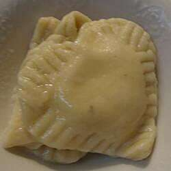

Homemade Ravioli

Description
These heart-shaped ravioli are really cute for Valentine's day or just any
good, fresh dinner!
Ingredients
- 2 cups all-purpose flour, or as needed
- 2 eggs
- 1 cup ricotta cheese
- 1/2 cup shredded mozzarella cheese
- 1/4 cup grated parmesan cheese
- 1 cup water
- 1 egg
Directions
-
Measure flour into a large bowl and make a well in the center. Crack
eggs into the center. Beat eggs with a fork until blended. Use the fork
to gradually draw in flour from the sides, mixing until all the flour is
incorporated.
-
Turn dough out onto a lightly floured work surface. Knead until smooth
and elastic, 3 to 4 minutes. Cover with plastic wrap and let rest for at
least 20 minutes.
-
Mix ricotta, mozzarella, and Parmesan cheeses together in a bowl. Whisk
water and egg together in a small bowl to make egg wash.
-
Lightly flour the work surface again. Roll out dough into a thin sheet.
Cut into hearts using a cookie cutter. Brush edges with egg wash. Spoon
filling into the center of 1/2 of the hearts; cover with remaining
hearts. Press edges together to seal.
-
Bring a large pot of salted water to a boil. Add ravioli in batches and
wait until they float to the top. Cook for 3 to 4 minutes after that.
Transfer to a colander using a slotted spoon. Repeat with remaining
ravioli.